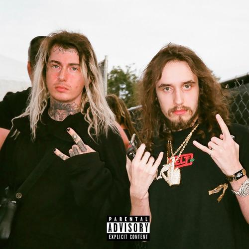

Eric Whitney, mais conhecido como Ghostemane e alternativamente como Baader-Meinhof, Swearr, Limsa Lominsa ou GASM é um músico norte-americano Thelemita Eric cresceu no estado da Flórida, nos Estados Unidos, onde começou sua carreira musical tocando em bandas de Hardcore punk e Doom Metal. Ghostemane se mudou para Los Angeles, Califórnia pouco depois de começar sua carreira no trap onde começou a ganhar popularidade. Sua inusitada mistura entre trap e metal o fez ganhar muita popularidade no SoundCloud.